01 Close by, so it feels big.
About 3,000 fireworks. It's a local-sized show, but the river is narrow, so the light and sound feel right in front of you.
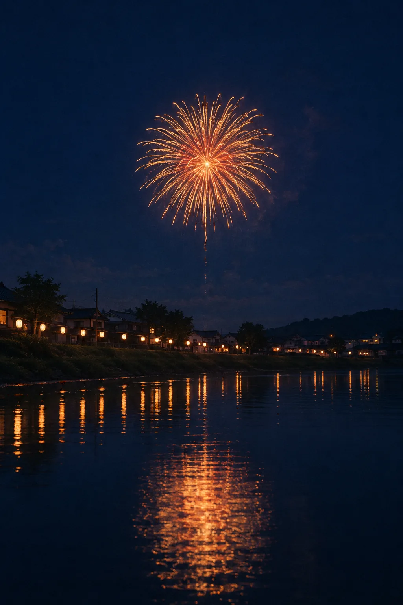
とおまち 夏花火ナイト
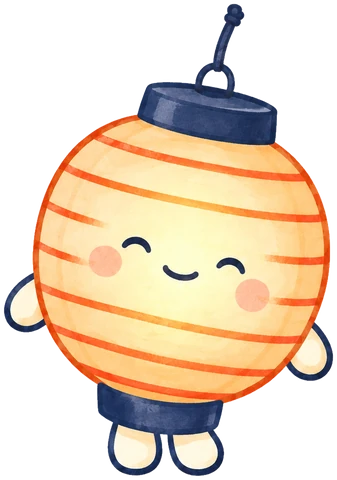
No need to try hard~
No summer plans yet?
This one's for you.
Just drop by. Your easy-going summer favorite.
¥1,500 per person (tax incl.) · Free cancellation until 17:00 the day before · First come, first served
English is OK. No LINE? Email info@toomachi-kanko.jp
#MOYAMOYA
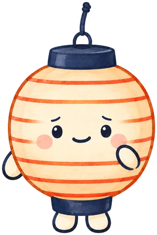
I get it~ It can be tiring, right?
#TOOMACHI
About 3,000 fireworks. It's a local-sized show, but the river is narrow, so the light and sound feel right in front of you.
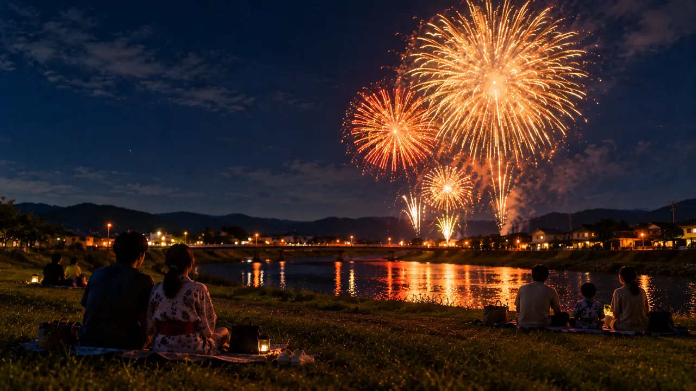
Crowds are calmer than at big-city festivals. Sit down and enjoy the night sky at your own pace.
It was more relaxed than I expected. I'm glad I just dropped by.
#EVENT
Free entry
¥1,500 (tax incl.) / person
2 people: ¥3,000 (tax incl.)
Free cancellation until 17:00 the day before · First come, first served

Want to sit back and relax?
A seat makes it easy.
#ONE DAY
Arrive at the station
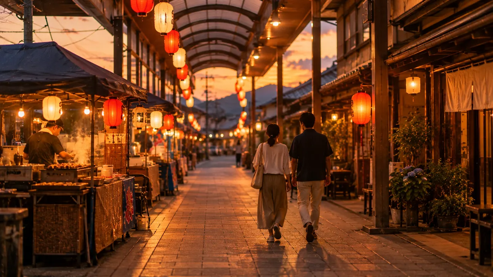
Head to the riverbank
Fireworks begin
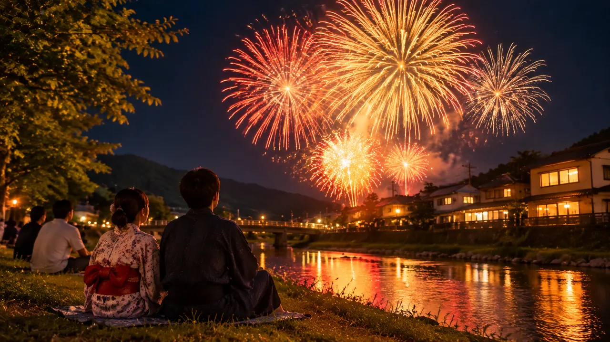
Stay the night in town
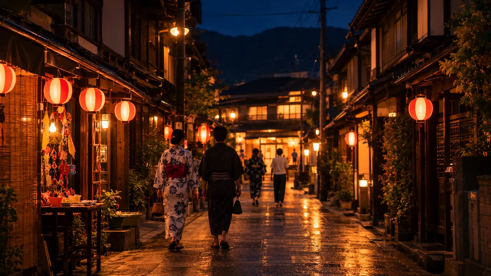
Breakfast at a retro café (kissaten)
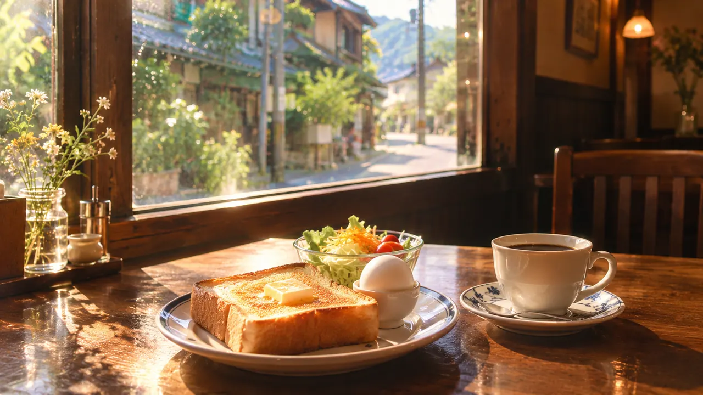
#FEEL
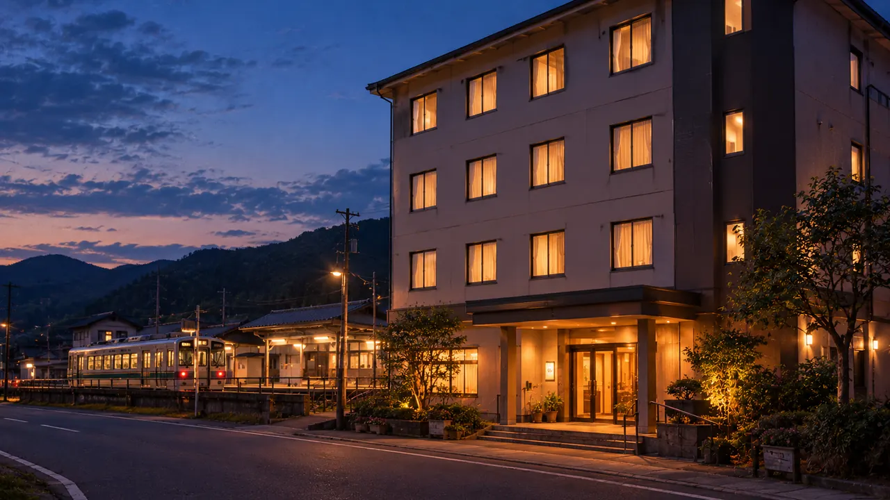
The smell of food stalls and the glow of lanterns, like the summer holidays of childhood.
Ride the train a little way out. An ordinary weekend becomes a summer memory.
Come as you are~
#STAY
Stay over, and the evening
doesn't have to end~
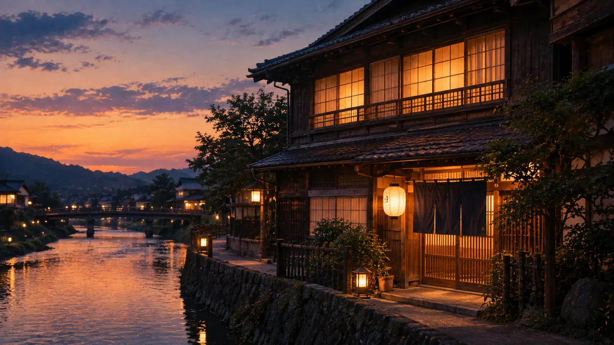
Japanese inn (ryokan)
A wooden inn that has watched over the town for many years. Open the window and you'll hear the river.
Ask about this inn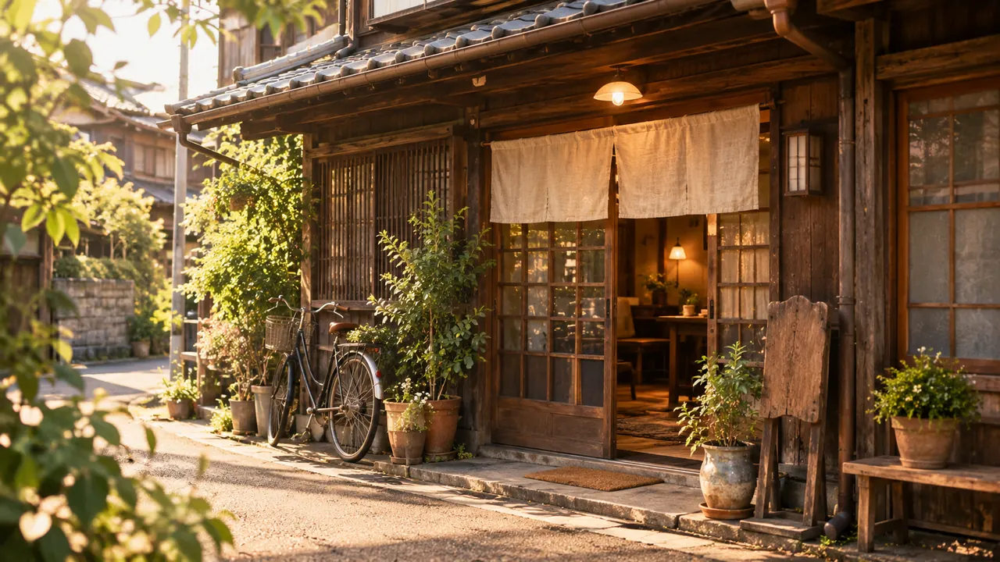
Guesthouse (minshuku)
A family-run place that feels like coming home. Stay at a friendly price.
Ask about this innSmall hotel
Right by the station and within walking distance of the venue. Simple and comfortable.
Ask about this inn1 night with dinner & breakfast: from about ¥9,000 (tax incl., estimate)
Prices vary by property and plan.
Just asking is fine. Our staff will tell you about rooms and plans one by one.
Send us the name of the inn. We reply during business hours (weekends too in summer).
You can write to us in English (replies may take a little longer).
We introduce inns and answer questions. We can't promise availability or a confirmed booking.
Don't use LINE? Email us at info@toomachi-kanko.jp.
#EAT
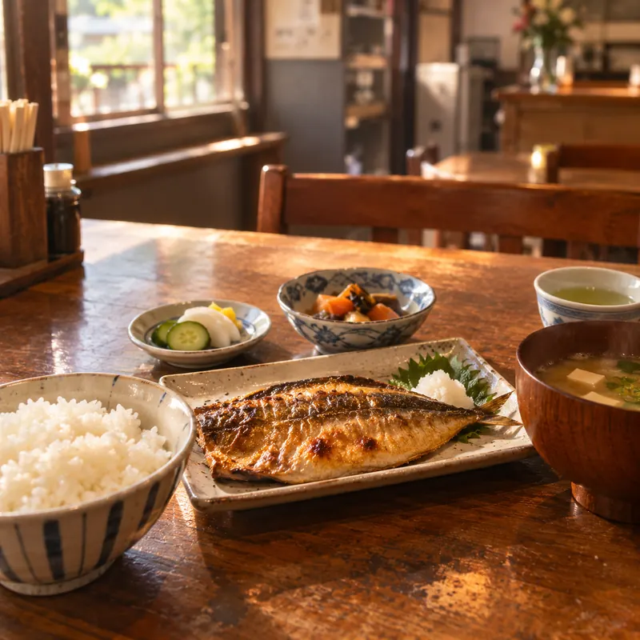
Japanese set meals
Maruya Shokudo
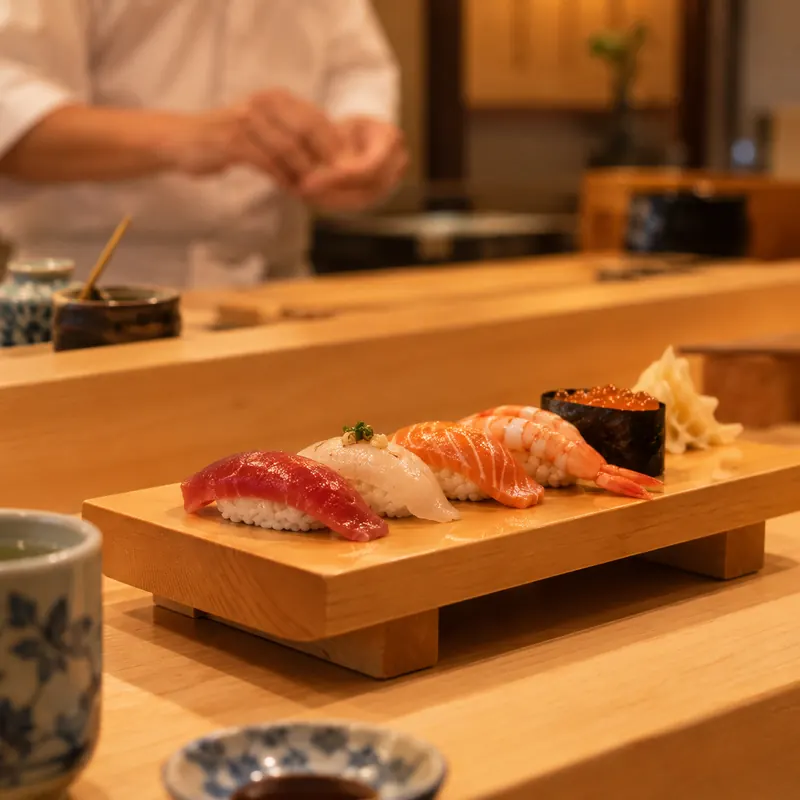
Sushi
Sushi Kawasemi
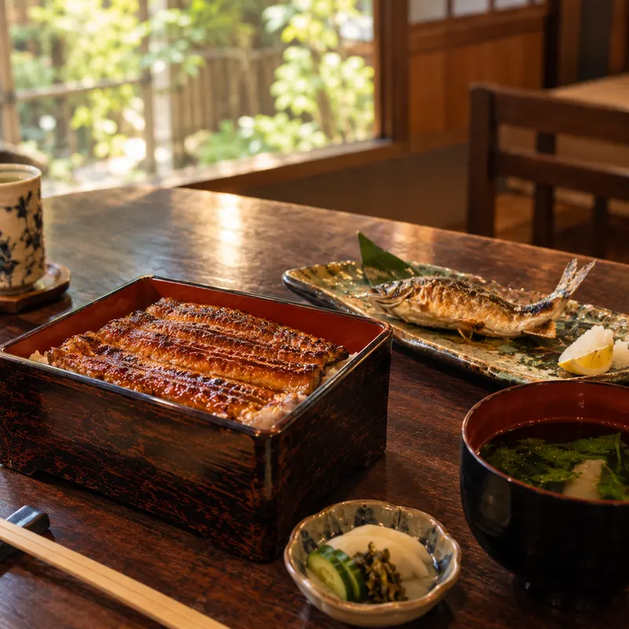
Local river fish
Unazen
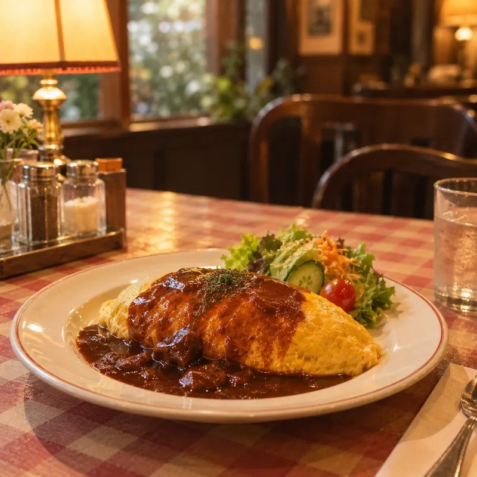
Japanese-style Western food
Hanabitei
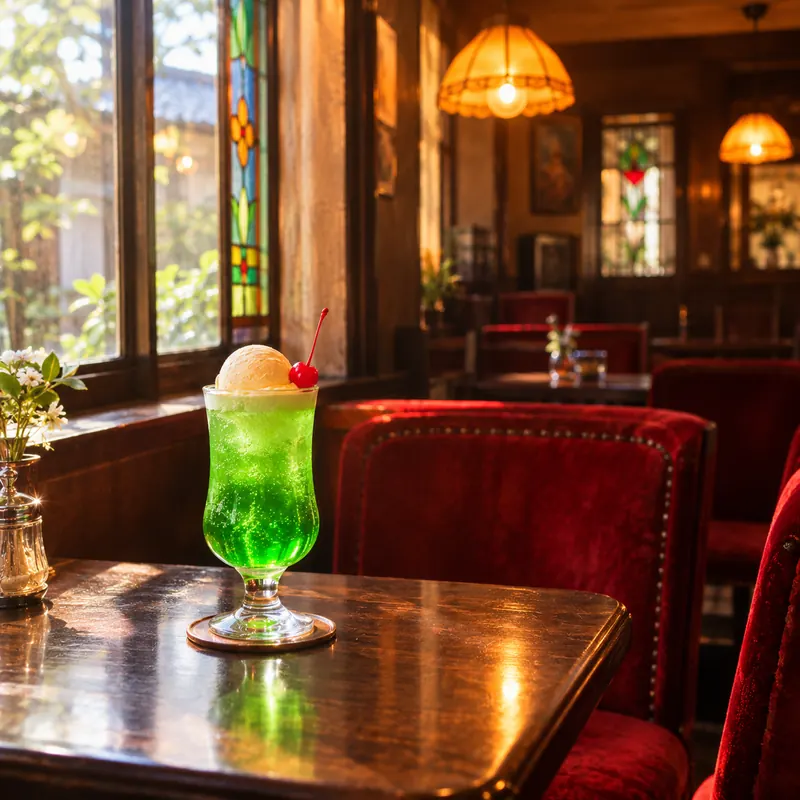
Retro café (kissaten)
Kissa Lantern
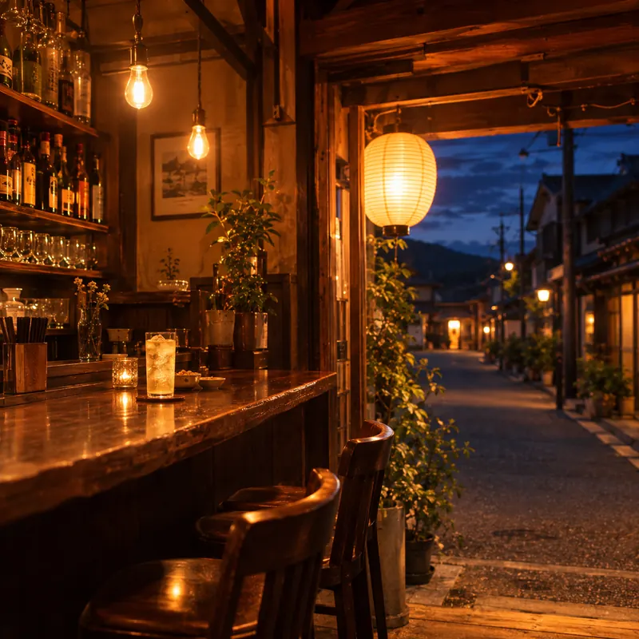
Bar & café
Yomise
#VOICE
Personal impressions (fictional examples)
Honestly, I thought fireworks festivals were always crowded and tiring. This one was more relaxed than I expected, and I'm glad I just dropped by.
Just walking past the stalls on the shopping street was fun. We had a great time even before the fireworks started.
It was close to the station, so it was easier to get to than I thought.
I liked the relaxed mood more than anything flashy. I'd happily come back.
#FAQ
No booking is needed to watch the fireworks.
If you'd like to sit and relax, we recommend reserving a seat.
Crowds are calmer than at large fireworks festivals in big cities.
It suits people who want a relaxed evening.
The event goes ahead in light rain. In severe weather, it may be postponed to the next day.
Updates are posted on our official LINE account on the day.
Yes. Reserved seats can be cancelled free of charge until 17:00 the day before.
It's about a 10-minute walk from Toomachi Station.
Roads nearby get busy on the day, so we don't recommend coming by car.
Pick an inn you like from the ones on this page and ask us on our official LINE account.
Our staff will tell you about rooms and plans. You can ask in English, by LINE or by email.
Yes. It's not too crowded, so many families with children come.
Lots of stalls line the shopping street.
Snacking as you walk is part of the fun.
Of course. Many people wear a yukata (a light summer kimono), and everyday clothes are just as welcome.
The riverbank is grassy and uneven, so comfortable shoes are a good idea.
Yes. In the free area, many people sit on a picnic mat (a "leisure sheet") on the riverbank.
Please keep the paths clear and use only the space you need.
Please take your trash home with you.
Public trash bins are rare in Japan, so a small bag is handy.
You can enjoy the show without booking.
For a relaxed view, we recommend reserving a seat in advance.
If you feel like it,
I'll be here~
¥1,500 per person (tax incl.) · Free cancellation until 17:00 the day before · First come, first served
English is OK. No LINE? Email info@toomachi-kanko.jp
#ACCESS
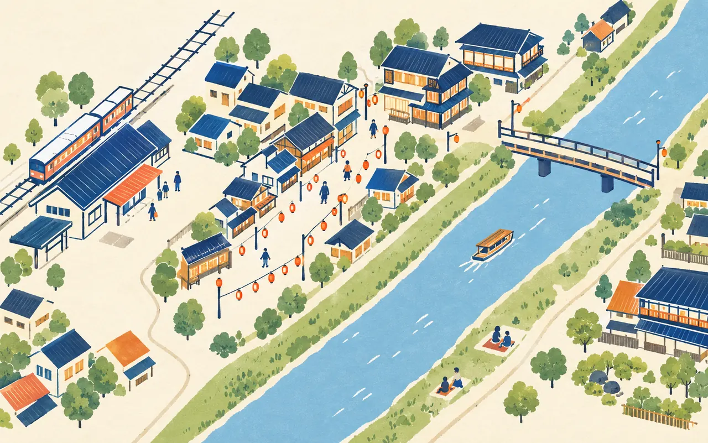